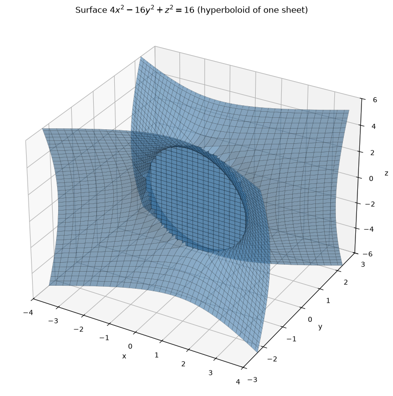
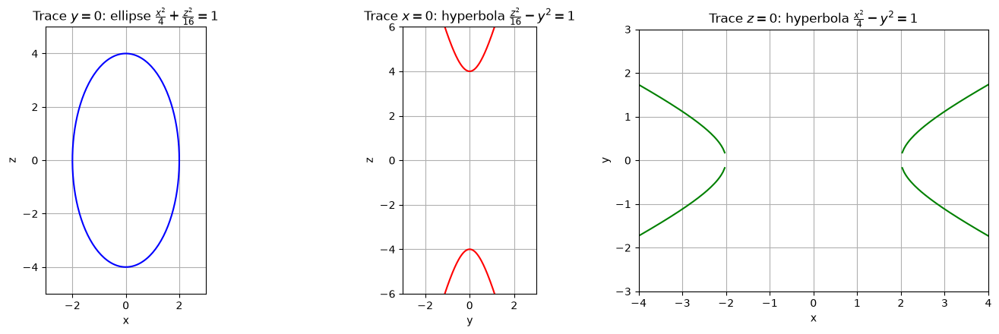
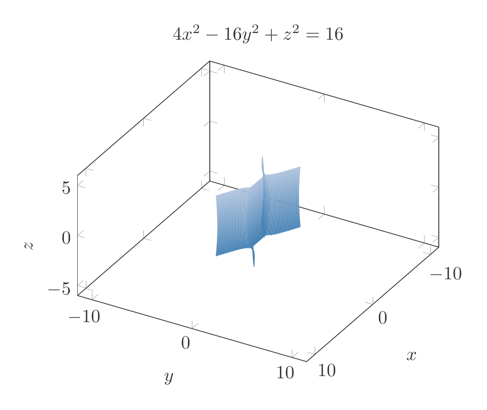
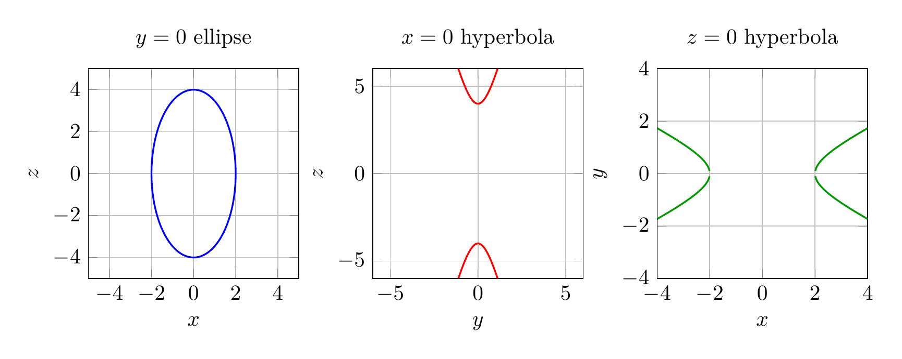

Path: mcma-Kimi-K2.7-Code/calculus-12.6.18/chat_20260825_023926_610546_utc_0800
Problem
Please solve the math problem in the image.

End of problem
Answer
# Identifying the Surface $4x^2 - 16y^2 + z^2 = 16$ Using Traces
## 1. Write the equation in standard form
Divide both sides by $16$:
$$
\frac{x^2}{4} - y^2 + \frac{z^2}{16} = 1
$$
or
$$
\frac{x^2}{2^2} - \frac{y^2}{1^2} + \frac{z^2}{4^2} = 1.
$$
This is the standard form of a **hyperboloid of one sheet**. The negative sign is on the $y^2$-term, so the axis of the hyperboloid is the $y$-axis.
---
## 2. Find the traces
### Trace in the plane $y = k$ (horizontal cross-sections)
Set $y = k$:
$$
\frac{x^2}{4} + \frac{z^2}{16} = 1 + k^2.
$$
For every real number $k$, the right-hand side is positive, so each horizontal slice is an **ellipse**. This tells us the surface extends forever in both the positive and negative $y$-directions and is connected — a key feature of a hyperboloid of one sheet.
### Trace in the plane $x = k$
Set $x = k$:
$$
\frac{z^2}{16} - y^2 = 1 - \frac{k^2}{4}.
$$
- If $|k| < 2$, the right side is positive, so the trace is a **hyperbola** opening in the $z$-direction.
- If $|k| = 2$, the trace degenerates to two intersecting lines $z = \pm 4y$.
- If $|k| > 2$, there is no real trace.
### Trace in the plane $z = k$
Set $z = k$:
$$
\frac{x^2}{4} - y^2 = 1 - \frac{k^2}{16}.
$$
- If $|k| < 4$, the trace is a **hyperbola** opening in the $x$-direction.
- If $|k| = 4$, the trace degenerates to two intersecting lines $x = \pm 2y$.
- If $|k| > 4$, there is no real trace.
---
## 3. Identify the surface
Because the horizontal traces ($y = k$) are ellipses and the vertical traces ($x = k$ or $z = k$) are hyperbolas, the surface is a **hyperboloid of one sheet** centered at the origin with its axis along the $y$-axis.
$$
\boxed{\text{The surface } 4x^2 - 16y^2 + z^2 = 16 \text{ is a hyperboloid of one sheet.}}
$$
---


\documentclass[border=10pt]{standalone}
\usepackage{pgfplots}
\pgfplotsset{compat=1.18}
\begin{document}
\begin{tikzpicture}
\begin{axis}[
view={120}{30},
xlabel=$x$,
ylabel=$y$,
zlabel=$z$,
title={$4x^2-16y^2+z^2=16$},
xmin=-4, xmax=4,
ymin=-3, ymax=3,
zmin=-6, zmax=6,
samples=40,
samples y=40,
colormap={steelblue}{rgb255=(70,130,180) rgb255=(176,196,222)},
shader=flat,
opacity=0.8,
axis equal
]
\addplot3[surf,domain=-4:4,y domain=-3:3,variable=\u,variable y=\v]
({u}, {sqrt(max((4*u^2+v^2-16)/16,0))}, {v});
\addplot3[surf,domain=-4:4,y domain=-3:3,variable=\u,variable y=\v]
({u}, {-sqrt(max((4*u^2+v^2-16)/16,0))}, {v});
\end{axis}
\end{tikzpicture}
\end{document}

\documentclass[border=10pt]{standalone}
\usepackage{pgfplots}
\usepgfplotslibrary{groupplots}
\pgfplotsset{compat=1.18}
\begin{document}
\begin{tikzpicture}
\begin{groupplot}[
group style={group size=3 by 1, horizontal sep=1.2cm},
axis equal,
grid=both,
width=5cm,
height=5cm
]
\nextgroupplot[title={$y=0$ ellipse}, xlabel=$x$, ylabel=$z$, xmin=-3, xmax=3, ymin=-5, ymax=5]
\addplot[blue,thick,domain=0:360,samples=200] ({2*cos(x)},{4*sin(x)});
\nextgroupplot[title={$x=0$ hyperbola}, xlabel=$y$, ylabel=$z$, xmin=-3, xmax=3, ymin=-6, ymax=6]
\addplot[red,thick,domain=-3:3,samples=200] {4*sqrt(1+x^2)};
\addplot[red,thick,domain=-3:3,samples=200] {-4*sqrt(1+x^2)};
\nextgroupplot[title={$z=0$ hyperbola}, xlabel=$x$, ylabel=$y$, xmin=-4, xmax=4, ymin=-3, ymax=3]
\addplot[green!60!black,thick,domain=-4:-1,samples=200] {sqrt(x^2/4-1)};
\addplot[green!60!black,thick,domain=-4:-1,samples=200] {-sqrt(x^2/4-1)};
\addplot[green!60!black,thick,domain=1:4,samples=200] {sqrt(x^2/4-1)};
\addplot[green!60!black,thick,domain=1:4,samples=200] {-sqrt(x^2/4-1)};
\end{groupplot}
\end{tikzpicture}
\end{document}

End of answer